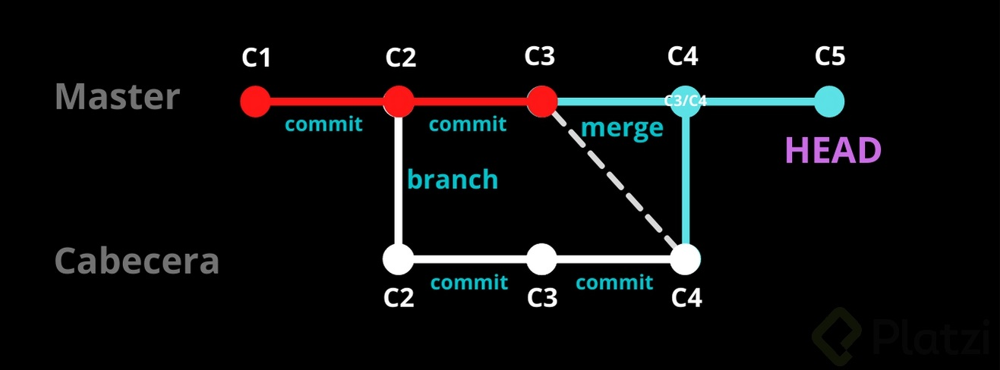
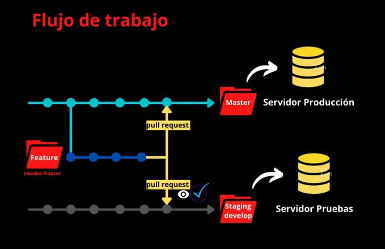
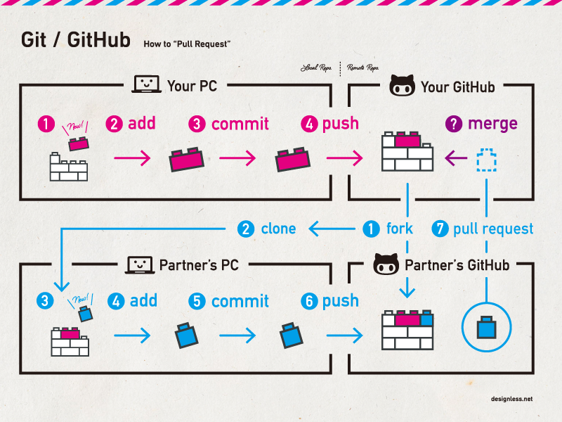

En el curso de Git y GitHub vimos un ejemplo llamado “blogpost”, a continuación, se detallarán los apuntes destacados, así como los comandos necesarios para realizar el taller.
Capítulo 2: Comandos básicos en Git
Para crear un repositorio debes indicar donde estará la carpeta central de tus archivos, por ejemplo, en un sitio web, seria donde está el archivo index.html
- git-init -> comando para iniciar un repositorio. Debes estar en la ruta de la carpeta que utilizaras. se creará una carpeta oculta llamada .git
- code -> si escribes este comando en la terminal, se abrirá de modo automático visual studio code.
- git status -> comando para saber cual es el estatus del proyecto. Nos dirá en que rama estamos, los commits realizados y si hay algún archivo que aún no se agrega al proyecto
- git add -> comando para agregar un archivo al proyecto. Por ejemplo: git add historia.txt
- git rm -> comando para eliminar un archivo del directorio. El archivo no se elimina de la carpeta, sino que se elimina de los archivos disponibles del directorio de GIT. Por ejemplo: git rm historia.txt
- git rm --cache -> comando para eliminar un archivo de la memoria ram. Por ejemplo: git rm --cache historia.txt
- git commit -> comando que envia los cambios al repositorio. Una mala practica es solo ejecutar este comando si agregar un comentario de que es lo que se esta cambiando. Se debe agregar -m "" y entre las comillas agregar un mensaje. Por ejemplo: git commit -m "Este es el primer commit de este archivo"
Si se ejecuta este comando si haber realizado una configuración de GIT, nos aparecerá un error indicando que se deben agregar un nombre de usuario y un correo. Para identificar quien es la persona que esta realizando estos cambios.
- git config -> comando para ver todas las configuraciones que tiene git.
- git config --list -> comando para ver la configuración por defecto de GIT. También podremos ver las configuraciones que le faltan.
- git config --global -> comando para cambiar todos los usuarios globales.
- git config --global user.name -> comando para cambiar el nombre de la configuración global. El nombre debe ir entre comillas. Por ejemplo: git config --global user.name "Felipe Munoz"
- git config --global user.email -> comando para cambiar el correo de la configuración global. El correo debe ir entre comillas. Por ejemplo git config --global user.name "analista.felipe.m@gmail.com".
NOTA: para hacer la arroba en gitbash utilizar las teclas ALT GR + Q.
con esta configuración realizada, ya puedo volver a intentar realizar el primer commit.
Si ejecuto el comando de commit y agrego una descripción y luego intento guardar, me aparecerá un error, ya que SIEMPRE tengo que primero agregar los cambios con el comando git add.
- git add . -> con el punto al final puedo decirle al sistema que me agregue todos los archivos. Esto se utiliza cuando estoy editando mas de un archivo a la vez.
- git log -> comando para ver todo el historial de commit que he escrito. Por ejemplo: git log historia.txt
- git show -> comando que te muestra los cambios que ha tenido el archivo. En rojo aparecerá el texto o código original, y en verde los cambios o texto nuevo. Por ejemplo: git show historia.txt
Si intento agregar un commit sin un mensaje, aparecerá una pantalla llamada VIM en donde te SUGIEREN que escribas algo.
- Para escribir texto en VIM, debo presionar las teclas ESC + I. El mensaje se escribira en letras amarillas.
- Al terminar, presionar la tecla ESC.
- En la parte de abajo de la pantalla, aparecerá una línea en donde se podrá teclear SHIFT + Z + Z para cerrar la pantalla de VIM.
Si intento escribir un mensaje y luego presiono ENTER más de una vez y luego escribo otra parte del mensaje, la primera línea de texto aparecerá en color amarillo, mientras que las demás estarán en color blanco o gris, esto es una mala práctica, ya que ese texto quedara separado por espacios en blanco y que pueden producir errores de lectura.
Como comparar los cambios entre un commit y otro
- git diff -> comando para comparar los cambios ocurridos entre commit y commit. se debe copiar el codigo con el que se almacena cada commit y luego separarlos con espacio para comparar. Por ejemplo: git diff 00f119a85ba6858cfb5a6858e6592f8fcade998b 002a003c31eceb2ecd22f19113c969c775d1bdda
En verde me aparece la versión original.En rojo me muestra los cambios y textos agregados.
Staging -> área creada en memoria ram luego de escribir el comando git init.
Carpeta /.git/ -> Carpeta donde se almacena la base de datos del repositorio.
Cuando escribes el comando git add los cambios pasan a vivir dentro del área de staging (estado temporal)

checkout -> comando para traer cambios que pudo realizar otra persona en un proyecto compartido.
por defecto, el proyecto comienza en la rama MASTER, donde estaría la versión 1 de lo que queramos hacer.
Con cada commit puedes ir creando tantas versiones como quieras.
puedes crear ramas a partir del commit que quieras. Poe ejemplo: tu proyecto funciona hasta cierto punto, pero quieres probar que tal funcionara con otra librería o plugins, puedes crear una rama para realizar pruebas sin afectar lo que ya funciona bien.
Puede darse el caso en que el proyecto este en una etapa final y te des cuenta que tiene un bug grave que obliga a modificar cosas. Para esto se recomienda crear una nueva rama que es conocida como BUGFIXING o HOTFIX (arreglo en caliente) en donde se realizaran todas las pruebas y una vez corregido el error, se une esta rama a la rama principal MASTER.
merge -> es cuando unes los cambios de una rama con otra.
En el caso en que se quiera volver en el tiempo de mi proyecto, por ejemplo, volver al commit 2 se utilizó el comando git log y el nombre del archivo para seleccionar un punto de restauración.
- git reset -> comando que permite volver a una versión anterior. Por ejemplo: git reset 00f119a85ba6858cfb5a6858e6592f8fcade998b
Existen 2 tipos de reset:
- git reset --hard -> TODO vuelve al estado anterior. Por ejemplo: git reset 00f119a85ba6858cfb5a6858e6592f8fcade998b --hard
- git reset --soft -> Volvemos a la versión anterior, pero mantiene todo lo que está en staging, que puede volver a agregarse. Por ejemplo: git reset 00f119a85ba6858cfb5a6858e6592f8fcade998b --soft
Si reviso el archivo historia.txt y el comando fue bien escrito, todos los últimos cambios serán eliminados y volverá a la segunda versión del texto.
Aquí comienza a desarrollarse el proyecto del curso:
- Creo un archivo blogpost.html con un diseño básico.
- Ejecuto el comando git status y reconoce el nuevo archivo html.
- Agrego el archivo con el comando git add .
- Vuelvo a revisar con git status y ahora deberia aparecer como agregado (el nombre del archivo en verde)
- Creo una carpeta css y un archivo de estilos.css
- Agrego estilos y se anexo a la página html.
- Con git diff puedo ver la diferencia que hay entre el staging (lo que está guardado en la ram) y lo que está en el directorio (lo que esta guardado en el disco duro)
- Vuelvo a ejecutar git add . para agregar los nuevos cambios y archivos y estarán todos en staging
- Guardo los cambios commit -am "arranco mi proyecto real con html y css" y los cambios son subidos.
- Ejecuto el comando git log y veo que se agregó el nuevo commit, y que aparecen el primer y segundo commit, pero el resto fueron borrados al hacer un reset hard.
- Ejecuto el comando git log --stat para ver los cambios que se hicieron por archivos expresados en bytes.
- Y con el comando git checkout podre VER como se veia un archivo en cierto commit. Por ejemplo git checkout 002a003c31eceb2ecd22f19113 blogpost.html
Este comando nos ayuda a eliminar archivos de Git sin eliminar su historial del sistema de versiones. Esto quiere decir que si necesitamos recuperar el archivo solo debemos “viajar en el tiempo” y recuperar el último commit antes de borrar el archivo en cuestión.
Recuerda que git rm no puede usarse así nomás. Debemos usar uno de los flags para indicarle a Git cómo eliminar los archivos que ya no necesitamos en la última versión del proyecto
- git rm --cached -> Elimina los archivos de nuestro repositorio local y del área de staging, pero los mantiene en nuestro disco duro. Básicamente le dice a Git que deje de trackear el historial de cambios de estos archivos, por lo que pasaran a un estado untracked.
- git rm --force -> Elimina los archivos de Git y del disco duro. Git siempre guarda todo, por lo que podemos acceder al registro de la existencia de los archivos, de modo que podremos recuperarlos si es necesario (pero debemos usar comandos más avanzados).
Este comando nos ayuda a volver en el tiempo. Pero no como git checkout que nos deja ir, mirar, pasear y volver. Con git reset volvemos al pasado sin la posibilidad de volver al presente. Borramos la historia y la debemos sobreescribir. No hay vuelta atrás.
Este comando es MUY PELIGROSO y debemos usarlo solo en caso de emergencia. Recuerda que debemos usar alguna de estas dos opciones:
Hay dos formas de usar git reset:
- git reset --soft -> Borramos todo el historial y los registros de Git pero guardamos los cambios que tengamos en Staging, así podemos aplicar las últimas actualizaciones a un nuevo commit.
- git reset --hard -> Borra todo. Todo, absolutamente todo. Toda la información de los commits y del área de staging se borra del historial.
¡Pero todavía falta algo!
- git reset HEAD -> Este es el comando para sacar archivos del área de staging. No para borrarlos ni nada de eso, solo para que los últimos cambios de estos archivos no se envíen al último commit, a menos que cambiemos de opinión y los incluyamos de nuevo en staging con git add, por supuesto.
Capítulo 3: Flujo de trabajo básico en Git
Cuando se trabaja en equipo en un mismo proyecto, se debe subir la informacion a un servidor remoto o tambien llamado repositorio remoto. Ejemplos de esto pueden ser: GitHub, GitLab, BitBucket o puede ser tu propio servidor.
Repositorio remotoCuando se quiere comenzar a trabajar con un servidor remoto, en vez de comenzar el proyecto con el comando git init, se utiliza el comando git clone y la url del servidor.
- Por ejemplo: git clone https://github.com/libgit2/libgit2 Lo que hace git clone es hacer una copia de toda la ruta master y crea la base de datos de todos los cambios históricos en mi propio repositorio local.
Una vez que realice todos los cambios que eran necesarios, así como las mejoras, debo subir la información al servidor remoto utilizando el comando git push
Si hay mas personas trabajando en el repositorio remoto y están subiendo cambios, puedo traer esas actualizaciones a mi repositorio local utilizando el comando git fetch (Trae los cambios pero no los copia en mis archivos)
Y para poder copiar los cambios a mis archivos, debo fusionar la última versión de mi trabajo en local con las actualizaciones utilizando el comando git merge.
Hay una forma más rápida de hacer la actualización y la descarga, estos es con el comando git pull.
Al inicio del proyecto se comienza con una rama llamada master la cual se puede ver en la consola con el nombre de la carpeta. Sxxxx@LAPTOP-630B MINGW64 ~/proyecto1 (master)
Las ramas son la forma en la que podemos hacer cambios para probar diferentes opciones, sin que estos afecten la rama principal (master).
Cuando uno crea una rama lo que hace básicamente es una copia del ultimo commit en otro lado.
Volviendo al ejemplo del curso
- Se comienza por editar el archivo blogpost.html y estilos.css agregando modificaciones al código.
- En la terminal se ejecuta el comando git status y muestra que han ocurrido cambios en los archivos ya nombrados.
- Para guardar los cambios también puedo usar el comando git commit -a. Se abrira un entorno llamado VIM para escribir un mensaje. Se presionan las teclas ESC + I para escribir. Luego ESC SHIFT + Z + Z para guardar y cerrar.
- Ejecuto el comando git log para ver si se guardó el cambio.
- Ejecuto el comando git log --stat puedo leer la información de cuantos kilobytes se agregaron o quitaron, así como la cantidad de atributos de código que se agregaron y quitaron.
- una vez que termino de realizar los cambios a la versión más actualizada de la rama master, ejecuto el comando git show para ver donde está el HEAD. Para este caso está apuntando a master. Por ejemplo: (HEAD -> master)
NOTA: cuando el texto que aparece en pantalla es mas largo que la vista de la terminal y no puedes bajar si no es con la tecla ENTER. Se debe presionar la tecla Q para salir del comando y volver a la linea de consola normal.
Branch- Para crear una nueva rama, se utiliza el comando git branch y el nombre de la rama. Por ejemplo: git branch cabecera
- si vuelvo a ejecutar el comando git show ahora aparecerá que el HEAD apunta tanto al master como a la cabecera (HEAD -> master, cabecera)
- Para moverme a la otra rama debo utilizar el comando git checkout y el nombre de la rama. Por ejemplo git checkout cabecera
- Ahora en la línea de la terminal aparece que estoy trabajando en la cabecera. Sxxxx@LAPTOP-630B6 MINGW64 ~/proyecto1 (cabecera)
- Ahora vuelvo a editar el archivo de blogpost.html agregando un header. Ejecuto nuevamente el comando git status y aparece que se realizó un cambio en el archivo blogpost.html.
- para guardar los cambios ejecuto el comando git commit -m "estructura inicial de la cabecera"
- Si ahora utilizo git log y me mostrara los commit que estaban guardados en la ruta (master) y el HEAD que ahora esta en cabecera.
- Y si vuelvo a la rama master con el comando git checkout master y reviso el archivo blogpost.html el código que había agregado desaparece. Pero si vuelvo a la rama cabecera, el código que agregue, vuelve a aparecer, esa es la magia de git.
En la rama CABECERA voy a realizar cambios al archivo blogpost.html y estilos.css creando un header.
Guardo los en la base de datos de git con los comandos de git add y luego git commit.
Ahora si vuelvo a la rama MASTER puedo ver que todo el código que he agregado en el header desaparece, pero aprovechare para agregar contenido nuevo en un párrafo al archivo blogpost.html y cambio la fuente del archivo estilos.css
Guardo los nuevos cambios. Por ejemplo git commit -am "Agregado el contenido adicional del blog y una mejor tipografía"
Ya que tengo el header listo y ademas agregue nueva información, quiero unir todos los cambios en una sola rama, para esto tengo que hacer un merge.
Merge
Para hacer un merge tengo que fijarme en que rama estoy. Si estoy en la rama CABECERA este comando traerá todo lo de la rama MASTER y CABECERA pasara a ser la rama principal.
Y si lo que quiero hacer es traer los cambios de la rama CABECERA a la rama MASTER, debo hacer un checkout y volver a la rama MASTER. Aquí invoco el comando merge y creara un commit nuevo fusionando el ultimo commit de MASTER y el ultimo commit de CABECERA.
Si existe un conflicto entre los archivos, por ejemplo, que dos personas hagan cambios a la misma línea de código (colocarle dos id distintos a la misma variable), no me permitirá hacer el merge hasta que alguien lo arregle.
Una vez que arreglo los conflictos, reviso que estoy en la rama MASTER con git status, y luego apunto a la rama que quiro unir con merge. Por ejemplo: git merge cabecera
Al ejecutar git merge se abrirá la consola VIM en donde debo dejar un mensaje. ESC + I para insertar y luego ESC + SHIFT + Z + Z para guardar.
En la consola aparecer un mensaje:
- > Auto-merging css/estilos.css
- > Auto-merging blogpost.html
Si ejecuto git log, podre leer los commit tanto de la rama MASTER como los de la rama CABECERA.
En el caso de estar trabajando en un proyecto con mas personas y no saber los nombres de sus ramas, puedo ejecutar el comando git branch y aparecerán todas las ramas disponibles. Aparecerá un signo de asterisco * para indicarme en que rama estoy.
Git no borra las ramas al hacer un merge. Si ejecuto checkout y entro a CABECERA, puedo ver el código de los archivos tal cual los tenia.
Ahora realizaremos un ejemplo al revés, traer los cambios de MASTER a CABECERA. Por ejemplo git merge master.
Se fusionan todos los cambios, hasta el ultimo commit en donde se cambio la fuente. Ahora, por el momento tengo en ambas ramas la misma configuración y el mismo código.
En la rama CABERCERA voy a cambiar el texto del título de blogspot.html y el color en estilos.css a rojo.
Guardo los cambios. Por ejemplo git commit -am "Modifique la cabecera y el color del texto"
De vuelta en la rama MASTER, voy a cambiar el texto del título de blogspot.html por uno nuevo y el color en estilos.css a azul. Además agregare un párrafo más al final de blogspot.
Agrego los cambios a git. Por ejemplo git commit -am "Agregue suscripcion, cambie la cabecera maestra y puse todo azul"
Desde la rama MASTER voy a tratar de fusionarlos con la rama CABECERA. El nuevo párrafo no debería generar ningún problema, pero tanto el título del blog como el color darán errores.
Si ejecuto el merge. En la consola aparecera el siguiente error:
- > Auto-merging css/estilos.css
- > CONFLICT (content): Merge conflict in css/estilos.css
- > Auto-merging blogpost.html
- > CONFLICT (content): Merge conflict in blogpost.html
Dentro de visual studio también aparecerá el código con error. Los signos de menor que <<< indican donde comienza el conflicto y los signos de mayor que >>> hasta donde llega el conflicto.
Resolver conflictos
En el caso del archivo estilos.css se puede editar de forma manual la propiedad color. Se puede elegir si mantener el color rojo, el color azul, o cambiarlo por un nuevo color. Y luego guardar los cambios desde visual studio.
Si veo el archivo de blogpost.html en Visual Studio CODE tengo la opcion de aceptar el cambio actual (accept current change), aceptar el cambio que viene (accept incoming change) o aceptar ambos cambios (accept both change)
Si ejecuto git status me dira que ambos archivos fueron modificados y que el merge aun no esta completo.
Como los cambios siguen en la etapa de staging, debo crear un nuevo commit para guardar la información. Por ejemplo git commit -am "Solucione el conflicto de las ramas al fusionar"
NOTA: SIEMPRE QUE HAGAS CAMBIOS A ARCHIVOS CON ERRORES DE MERGE RECUERDA APRETAR EL BOTÓN DE GUARDAR EN VISUAL STUDIO PARA QUE SEAN AGREGADOS EN EL COMMIT. RECUERDA MANTENER UNA COMUNICACIÓN ESTABLE CON TUS COMPAÑEROS DEL EQUIPO PARA ENTENDER DE FORMA MÁS PRECISA POR QUE SE PRODUCEN ERRORES AL MOMENTO DE UNIR RAMAS Y ASÍ PODER SOLUCIONARLAS EN COMUNIDAD.
Capítulo 4: trabajando con repositorios remotos en GitHub
GitHub es un sitio web que está montado en un súper servidor de git en el que cualquier persona puede clonar su repositorio, o crear un repositorio y compartirlo con otras personas.
Se puede utilizar con una ventana grafica sin necesidad de estar trabajando en la consola todo el tiempo.
Lo primero que haremos es crear una cuento en github.com
Cuando tenga mi usuario creado:
- en el menú superior presionar el botón donde tendremos varias opciones.
- Para esta clase, seleccionamos .
- Colocamos el nombre del repositorio: hyperblog
- Colocamos una descripción: Blog del curso Profesional de Git y GitHub de Platzi.
- Selecciono si el repositorio será público (lo puede ver todo el mundo) o privado (solo lo puedo ver yo). Para este ejercicio será Publico.
- Una muy buena práctica es seleccionar la opción "Add a README file " para que se cree un archivo de leeme.
- Las demás opciones las dejamos tal cual.
- Finalmente presionamos el botón .
Ya con el repositorio creado, si pincho sobre el archivo README.md se cambiara la página a una nueva en donde puedo ver las siguientes opciones:
- -> puedo ver la historia del repositorio, es igual a escribir el comando git log.
- -> un botón para ver el texto plano del archivo reedme.
- -> puedo ver los participantes de repositorio así como los commit que han publicado.
Para subir los archivos de mi blog, en la página de GitHub presiono el botón
Luego selecciono la opción que dice HTTPS y copio la URL que me aparece.
Ahora de vuelta a la línea de comando, me aseguro que estoy en la rama master con pwd.
Le diré a git que voy a agregar un origen remoto de archivos. Eso se hace con el comando git remote add origin. Y para conectarlo con mi cuenta en GitHub quedaria asi: git remote add origin https://github.com/felipemunozca/hyperblog.git
Pareciera que no pasó nada, pero si escribo el comando git remote, aparece que ya existe un origen para la conexión.
Si ejecuto el comando git remote -v me mostrara un enlace hacia mi repositorio de GitHub con las opciones de fetch y push.
Ahora que se logró la conexión entre el git local en mi máquina y mi cuenta de GitHub, subiré los archivos de la rama master.
NOTA IMPORTANTE: como ya no se utiliza la palabra master sino main, para ejecutar el código se deben concatenar ambos nombres de la siguiente manera: git push origin master:main
Si ejecuto el comando git push, se abrira una ventana en donde debo escribir mi correo y contraseña de mi cuenta de GitHub.
Si los pasos anteriores fueron correctos aparecerá un error que es normal.
- > ! [rejected] master -> main (fetch first)
Para solucionar este problema, lo primero es traer los archivos de mi repositorio remoto a mi repositorio local. Utilizo el comando git pull e indico la rama a la que estoy apuntando git pull origin main (RECORDAR CAMBIAR MASTER POR MAIN)
Me podría aparecer un WARNING indicando que el repositorio remoto aún no tiene ningún commit.
En la consola puedo ver que mi cuenta de GitHub se fusionó con mi repositorio local
- > From https://github.com/felipemunozca/hyperblog
- > * branch main -> FETCH_HEAD
- > * [new branch] main -> origin/main
Y además me mostrara un error diciendo que se reúsa a fusionar historias no relacionadas
- > fatal: refusing to merge unrelated histories
Para solucionar el error de las historias, se ejecuta el siguiente comando: git pull origin main --allow-unrelated-histories. Me aparecerá la consola VIM para escribir un comentario de la fusión de información.
Si voy a revisar mi repositorio en la página de GitHub aún no se ha subido ningún archivo. Tengo que volver a ejecutar el comando git push apuntando a main: git push origin master:main
Ahora los archivos son visibles desde la página de GitHub. Hasta puedo editarlos directamente desde ahí. Si voy al archivo blogpost.html y hago click, veré el código fuente, si presiono el botón y por ejemplo, cambio el titulo por "Bienvenido a hyperblog".
Después puedo hacer un PREVIEW a los cambios y agregar un commit "Cambie el titulo del blogpost" y en opcional "Porque puedo".
Me preguntara si quiero subir este commit a la rama main o si deseo crear una nueva rama con un nuevo nombre.
Para terminar, presionar el botón
Ahora en mi repositorio local no puedo ver los cambios que hice desde la página de GitHub a menos que vuelva a ejecutar el comando para descargar la actualización del codigo: git pull origin main
Las aplicaciones de mensajería instantánea (Whatsapp, Telegram, Messenger) funcionan enviando mensajes entre personas y para evitar que esos mensajes sean leídos por terceros o por los llamados hackers, los mensajes son cifrados.
Para proteger el mensaje, se vinculan matemáticamente llaves públicas y llaves privadas.
¿Y cómo funcionan?
- Lo que yo cifro con mi llave publica, solo puede abrirlo mi llave privada.
- Yo puedo enviar mi llave publica a cualquier persona, incluso publicarla en un blog.
- Y con eso cualquier mensaje que me envíen solo podrá ser leído con mi llave privada.
- Private Key: Para enviar información. Nunca se debe compartir
- Public Key: Para recibir información. Esta se puede compartir
Cuando me conecte a GitHub mediante HTTPS mi usuario y contraseña se guardaron en mi entorno local. Si me roban mi computador, con algún programa para crackear contraseñas pueden dar con mis credenciales de GitHub. Lo que es un riesgo para la empresa en la que trabajo, ya que pueden acceder a los repositorios de la empresa.
Esta es la forma en la que puedes crear un hueco de seguridad en un servidor, por ejemplo, el de un banco, en donde podrías sacar dinero sin que nadie se entere.
Es por ese motivo que debe crear un entorno de seguridad mas fuerte. Se recomienda trabajar con comunicación mediante llaves públicas y privadas.
En mi entorno local (mi propio computador) voy a crear una llave publica y privada. Una vez que estén hechas, las enviare a GitHub y le indicare que "para este repositorio quiero que utilices esta llave publica de mi llave privada". Y eso lo conecto por un protocolo nuevo llamado SSH o Security SHell
Las llaves SSH no son por repositorio o por proyectos, SON POR PERSONAS.
Para hace un poco de memoria, si quiero cambiar la información del nombre de usuario y email con el que se conectara mi máquina, debo posicionar la consola en la carpeta raíz de git: Sxxxx@LAPTOP-630B MINGW64 ~
Luego puedo escribir el comando git config -l para ver la información de nombre de usuario y email.
Si se diera el caso de comenzar a trabajar en una empresa de desarrollo y me dan un correo corporativo, debo cambiar mi correo personal por el de mi empresa. Eso lo haria de la siguiente forma: git config --global user.mail "minombre@miempresa.cl". Ahora podremos crear la llave SSH, recuerda que también lo puedes hacer para tu cuenta personal y no es necesario que sea solo para una cuenta de empresa.
Crear llaves
Una vez ubicado en el home del directorio de git Sxxxx@LAPTOP-630B MINGW64 ~
se escribe el siguiente comando: ssh-keygen -t rsa -b 4096 -C "anxxxxxxxxxxxx@xxxxxxxx.com"
- -t -> especifica cual es el algoritmo que voy a utilizar
- rsa -> algoritmo más popular debido a su complejidad
- -b -> que tan compleja es la llave
- 4096 -> complejidad de la llave desde una perspectiva matemática
- -C -> c mayúscula -> a que correo electrónico va a estar conectada esta llave. Idealmente se debe escribir el mismo correo que se definió en la configuración global.
Me preguntara donde guardar la llave. Por recomendación es mejor no cambiar nada y solo presionar ENTER.
Luego me pedirá un passphrase (significa password con espacios). Por lo general se recomienda ingresar una contraseña para mas seguridad. (Para este curso no será necesario así que solo se debe presionar la tecla ENTER)
Si busco en la consola puedo ver el siguiente texto en donde se confirma la creación de la llave:
- > The key fingerprint is: Sxxxxx:8xxxxxxxxxxxxxxxxxxxxxxx anxxxxxxxxxxxx@xxxxxxxx.com
Dentro de mi computador, si voy a la siguiente ruta C:\Users\Spr\.ssh podre ver mi llave privada y pública.
Para poder comenzar a hacer conexiones seguras, lo primero es revisar si mi sistema Windows tiene un programa corriendo que revisa las conexiones ssh. Para esto, dentro de la misma consola de git bash ejecutar el comando: eval $(ssh-agent -s)
Si ejecuto el comando me aparecerá la siguiente respuesta: Agent pid 1983 (El numero puede ser diferente en cada equipo).
Ahora debo agregar la llave al sistema operativo. Para agregar la llave, debo ejecutar el siguiente comando: ssh-add ~/.ssh/id_rsa
Si se ejecuta correctamente veré el siguiente mensaje en la consola: Identity added: /c/Users/Sxxxx/.ssh/id_rsa (anxxxxxxxxxxxx@xxxxxxxx.com)
NOTA: si utilizo el signo ~ dentro de la consola podre ir directo a mi carpeta home. Además, si escribo el nombre de la carpeta puedo ir directo al repositorio por ejemplo: ~/proyecto1
Es importante aclarar. Si tengo 3 computadores, debo tener una llave pública y privada distinta por cada equipo.
Utilizando Visual Studio, abro la llave id_rsa.pub
En el navegador, entro a mi cuenta de GitHub, en el menú superior, en donde sale la fotografía de mi cuenta, presiono para que se despliegue el menú y luego voy al botón .
Me dirijo hacia donde dice . Luego presiono el botón .
Escribo un título. Recomendación; escribir un nombre que se asocie a mi computador.
En key pego el código de mi archivo id_rsa.pub . Finalmente presiono el botón . Me pedirá mi contraseña de GitHub para continuar. Si todo resulto bien, puedo ver los datos de la llave en la pantalla del navegador.
Ahora volveré a pinchar el menú superior e iré a la sección . Luego iré a la página del repositorio del blogpost, presiono el botón y en vez de utilizar la conexión mediante HTTPS presiono para generar la URL.
En la consola de git bash vuelvo a entrar a la carpeta proyecto1. Ejecuto el comando git remote -v para ver las URL de mi repositorio, fetch y push.
NOTA: origin ES UN ESTANDAR DE LA INDUSTRIA, YO LE PODRIA COLOCAR EL NOMBRE QUE QUISIERA.
Conexión con SSH
Lo primero que debo hacer es cambiar la url del servidor remoto, en gitbash escribo el siguiente comando: git remote set-url origin git@github.com:felipemunozca/hyperblog.git
Vuelvo a ejecutar el comando git remote -v y ahora aparece que la conexión se realiza de esta manera:
- origin git@github.com:felipemunozca/hyperblog.git (fetch)
- origin git@github.com:felipemunozca/hyperblog.git (push)
Lo primero que tengo que hacer es traer la última versión del repositorio con git pull de GitHub (esto es una buena práctica y evita errores)
Me aparecerá un mensaje preguntando si la autenticidad de mi llave es real y debo responder yes o no. Como no pudo encontrar cambios, vuelvo a realizar el comando esta vez apuntando al directorio main: git pull origin main
Realizo algunos cambios al archivo blogpost.html y lo reviso con git status para ver si lo reconoce como pendiente. Guardo los cambios con un commit: git commit -am "Se crea una nueva versión del hyperblog"
Ahora si subo los archivos a GitHub con el comando: git push origin master:main. En el navegador puedo visualizar si los cambios en el archivo blogpost.html se subieron.
Si queremos saber el historial del proyecto, podemos utilizar el comando git log para ver todos los commit de mi proyecto hasta ahora.
Además, Podemos utilizar variantes para ver los log.
git log --all -> muestra todo lo que hemos hecho.
git log --graph -> muestra líneas de colores en la parte izquierda donde podre ver cuando dos ramas se han unido mediante merge.
git log --graph --decorate --oneline -> comando para ver toda la historia de una forma mas ordenada y fácil de leer. Hace que los hash o id de cada commit sean más fáciles de leer ya que se acortan mucho, por ejemplo: 31af3fc cambio de maestría o 1a5ac3b cambio de historia por vida
Tags
Los tags permiten asignar versiones a los commits con cambios más importantes o significativos de nuestro proyecto.
Lo primero es copiar el id desde git log --graph --decorate --oneline y luego escribir el siguiente comando, git tag -a con el nombre de la version, y recordando que es un commit asi que tambien debe llevar un mensaje. Y al final, debo agregar el id que copie. Por ejemplo: git tag -a v0.1 -m "Resultado de las primeras clases del curso" 45ee9d4
Una buena práctica es colocar la versión del proyecto incluyendo la v y un número que pueda ser correlativo ej: v0.1
Aparentemente no paso nada, pero si ejecuto el comando git tag veré cuantos tags se han registrado en el proyecto.
Para saber en qué punto fue creado la versión v0.1 puedo ejecutar el comando: git show-ref --tags. En la respuesta aparecerá el id del commit el cual use como base para crear la versión. Por ejemplo: d6dd22f35abb8f24d7740ca9fdeb23e9 refs/tags/v0.1
Los tags son útiles en GitHub para marcar un punto específico en la historia de nuestro proyecto (para los releases). De esta forma podemos hacer un seguimiento del progreso de nuestro proyecto e identificar los cambios que se han hecho en cada versión de manera más fácil.
Ahora enviamos los tags a GitHub git push origin --tags
En el navegador, en el repositorio del proyecto, si pincho el boton , luego voy a la pestaña "Tags" aparecerá v0.1
¿Qué pasa si creamos un tags que no nos gusta?
- Elegimos cualquier id y ejecutamos el comando: git tag -a dormido -m "ajsjdjahdj jashdjashdjas ashdjash" 37ae1d1
- Luego me traigo los archivos que hay en el servidor remoto con pull y subo los cambios con push --tags
- Vuelvo a ver el repositorio en el navegador y dentro de main -> tags -> aparece "dormido".
- Si lo quiero eliminar, lo puedo hacer desde la interfaz de GitHub, pero lo mejor es aprender a hacerlo desde la consola.
- Escribo el comando git tag para saber los tags que existen.Cuando ya se el que quiero eliminar escribo el siguiente comando: git tag -d dormido
- Aparece el siguiente mensaje: Deleted tag 'dormido' (was c3bf090)
- Para guardar los cambios primero traigo cualquier cambio del servidor con git pull origin main y luego actualizo los tags con git push origin --tags
- Si voy nuevamente al navegador y reviso los tags del proyecto seguirá apareciendo "dormido", y eso es porque no se borra de forma automática de GitHub ya que puede ser utilizado como un release, es decir, que es asumir que algo está listo, es una versión estable utilizable.
- Entonces para eliminarlo de forma completa, vuelvo a la consola de gitbash y escribo el siguiente comando: git push origin :refs/tags/dormido
comenzaremos con un repaso de los comandos importantes de ramas:
- checkout -> cambiar de rama. Por ejemplo git checkout cabecera
- branch -> me muestra todas las ramas que existen. Por ejemplo git branch
- show-branch -> nos muestra cuales son las ramas que existen y cuales han sido su historia. Por ejemplo git show-branch
- show-branch --all -> nos muestra cuales son las ramas que existen y su historia con mucho mas detalles. Por ejemplo git show-branch --all
- gitk-> comando con el que se abrirá un software con el que podemos ver de forma gráfica las ramas, commit, tags (se instala por defecto).
NOTA: para poder seguir escribiendo en la consola, debo cerrar el programa que se abrió antes.
- pull -> traemos los cambios de GitHub. Por ejemplo git pull origin cabecera
- checkout -> para movernos entre las ramas. Por ejemplo git checkout cabecera
- push -> subimos los cambios de la rama en la que estoy a GitHub. Por ejemplo git push origin cabecera
Branch (Ramas)
Desde la rama principal, creare dos nuevas ramas; header y footer.
Para comenzar, creare la rama header con el comando: git branch header
Y a continuación creo la rama del footer con el comando: git branch footer
Para revisar si las ramas se crearon, ejecuto el comando git branch y aparecerán todas las ramas disponibles. (aparecerá el signo * en la rama que me encuentro en este momento)
- > * cabecera
- > footer
- > header
- > master
Ahora subiré las nuevas ramas creadas a GitHub, primero con la rama header: git push origin header y luego la rama footer: git push origin footer
Yo puedo buscar un proyecto en GitHub que me interese y "clonarlo" para hacer mis propios cambios, pero eso no significa que yo pueda "Enviar" nueva información a ese repositorio.
En GitHub, busco el proyecto de hyperblog de Freddier, pincho el boton CODE para clonarlo, copiando la URL de HTTPS
En la consola voy a la carpeta donde creare el proyecto. Por ejemplo: /Users/SprXXXXX/proyecto2, luego escribo el comando clone junto a la url. Por ejemplo git clone https://github.com/felipemunozca/hyperblog.git
Se descargar los archivos a mi git local, pero en ningún momento me pedirá ni usuario ni contraseña. Esto es porque es un repositorio público.
Al ejecutar el comando git log, podre leer toda la historia del proyecto. Y si ejecuto el comando git branch me aparecerá que solo se descargó la rama MASTER.
Luego de leer el historial del proyecto, ejecuto el archivo blogpost.html y trato de realizar cambios para subirlos a GitHub ejecutando el comando git push origin master:main
Me pedirá el usuario y contraseña, los escribo. Luego aparece un error indiciando "Permision denied" o Permisos denegados. Si la persona no está agregada al repositorio, no podrá subir cambios.
Permisos de colaboradores en GitHub
Para agregar a un colaborador al proyecto, debo ir al repositorio hyperblog.
En el menu nav debajo del nombre, ir hasta la sección donde dice . Ir hasta el menú lateral izquierdo y seleccionar .
En la nueva página, presionar el botón . En el área de texto escribo el correo de la persona Por ejemplo: "anita@gmail.com". Si el email no aparece como disponible, es porque no está en modo público.
Si no quiero que mi email sea público para evitar que me mandan correos no deseados, puedo decirle a la persona que me diga su nombre de usuario de su cuenta de GitHub y agregarlo con ese nombre.
Escribo el nombre "AnitaPlatzi" y luego presiono el botón . Ahora AnitaPlatzi debe aceptar la invitación a participar. Si lo hace podrá subir cambios nuevos al proyecto utilizando push.
Nota: cuando me invitan a trabajar en un proyecto, lo recomendado es hacerlo en una rama nueva, crear todos los cambios que se me pidan o que considere necesarios, luego los subo y le doy aviso a la persona a cargo para que los revise y vea si realmente sirven. Si es así en ese momento se crea un merge con la rama main, antes NO SE TOCA la rama main.
Capítulo 5: Flujos de trabajo profesionales
Para continuar con el ejercicio. Yo me encargare del header y Anita del footer.
UN DATO IMPORTANTE: las imágenes son archivos binarios, y las buenas practicas dicen que los archivos binarios NO SE DEBEN AGREGAR A REPOSITORIOS. Deben ser ignorados.
En este ejercicio SI lo agregaremos para saber qué es lo que pasa con el repositorio.
Me dirijo a la rama header y agrego la imagen con el comando git add imagenes/dragon.png
Ahora ejecuto el comando git status y veo que el archivo fue reconocido y agregado. Continuo con un commit para salvar los cambios. Por ejemplo git commit -am "logo del header"
Ahora toca subir estos cambios al repositorio en GitHub. Lo primero es traer cualquier cambio que pueda tener la rama header git pull origin header Ahora subo los cambios del header junto con la imagen ej: git push origin header
Ahora si voy al navegador, a la página del repositorio hyperblog en el branches -> header debería estar la nueva carpeta y el nuevo archivo.
¿Cuál es el problema de trabajar con imágenes?
- Cada vez que yo haga cambios, voy a traer más binarios a mi repositorio, lo que lo hará mucho más pesado.
- Por ejemplo, si se abre la imagen dragon.png con paint y se le agrega una carita feliz, cuando se guarde ese cambio, con git status podremos ver que se registró un cambio en el peso del archivo. Ahora tocaría crear un commit y volver a subirlo a GitHub.
- Algunas veces GitHub tarda en mostrar los cambios que se hicieron en una imagen ya que se guardan en una cache intermedia que puede demorarse en procesar los cambios.
Agrego nuevos cambios a los archivos de blogpost.html y estilos.css y los guardo con un nuevo commit git commit -am "color de fondo, logo nuevo y mejor color de header"
Ahora los cambios quedan guardados en mi repositorio local, pero aun no los subo ya que quiero saber cómo va Anita con la rama footer. Anita agrega un footer en el html además de crear sus estilos css y los sube a su propia rama.
Merge de diferentes ramas
Anita me avisa que termino los cambios que le pidieron así que debo descárgalos desde su rama git pull origin footer
Reviso los cambios Y si están correctos, el encargado del proyecto (en este ejemplo yo) determina que tanto el header como el footer están correctos, asi que sedebe hacer un merge de ambos a la rama MAIN
El listado de comandos para realizar la fusión es el siguiente:
- git checkout master
- git merge header -> escribir el commit del porque se hace la fusión con el header
- git merge footer -> escribir el commit del porque se hace la fusión con el footer
- git pull origin main
- git push origin master:main
Desafío Freddy
Descargar el proyecto hyperblog desde el perfil freddier, en el archivo blogpost.html agregar mi nombre debajo del ultimo estudiante, guardar los cambios y subirlos para esperar a que hagan el merge.
Comandos utilizados:
- git checkout master
- git pull origin header
- git status
- git log
- git merge header ) (no me apareció la pantalla para escribir el commit
- git pull origin main
- git push origin master:main
En la clase anterior, realizamos un merge directo a la rama MAIN.
En un entorno profesional normalmente se bloquea la rama MAIN. La idea es que nadie pueda llegar y hacer un merge sin antes revisar el código.
La rama MASTER o MAIN es la que eventualmente se subirá al servidor real, llamado SERVIDOR DE PRODUCCIÓN que es el que se abre desde un navegador, por ejemplo: www.versionfinal.com o también es donde se sube nuestra compilación final de una aplicación móvil antes de enviarla appstore o play store.
Cuando tenemos que hacer pruebas, deben ser en un entorno que se parezca al de producción, que sea lo más similar al entorno real posible, sin que afecte a los usuarios. Si mi aplicación está corriendo en un sitio, por ejemplo www.hyperblog.com puedo crear un subdominio como test.hyperblog.com y los archivos son subidos y modificados en un servidor llamado SERVIDOR DE DESARROLLO o SERVIDOR STAGING .
En un entorno profesional, la forma de trabajar con estos servidores es crear los cambios en una rama asignada, por ejemplo, footer, header, etc. Este código debe ser revisado y es enviado a un entorno conocido como PULL REQUEST. Lo que permite que otros miembros del equipo lo vean y analicen los cambios. Si están de acuerdo, se puede hacer un merge hacia el SERVIDOR STAGING.
PULL REQUEST es una característica que solo GitHub tiene, no se podrá ejecutar en el repositorio git local de mi máquina.
La persona que en la vida real hace todo esto normalmente, es la líder del equipo o también un perfil de desarrollador más capacitado llamado DEV OPS (administrador del entorno de desarrollo)
imaginemos que encontramos errores ortográficos en los textos del blog. Para hacer una revisión de todos los textos que se ven en la página del blog, lo mejor es crear una nueva rama dedicada a buscar estos errores. Por ejemplo git branch fix-type
Una vez que este en la rama nueva, puedo ir al blogpost.html y corregir el texto. Revisamos los cambios con git status. Guardamos con los cambios con un commit, por ejemplo: git commit -am "Tildes y textos nuevos en el blog"
Ahora puedo subir los cambios al servidor git push origin fix-type
En la página de GitHub aparecerá un mensaje que nos dice que se detectó una diferencia entre el contenido subido a "fix-type" y la rama "main"
Pull Request en GitHub
Si yo soy el dueño del repositorio, y estoy en la rama master o MAIN, puedo presionar el botón del menú superior.
En la nueva página abierta, puedo presionar el botón . Aquí voy a poder comparar mi rama principal "base: main" con otra que tenga disponible "compare: fix-type"
Si bajo un poco, podre ver una vista previa en donde aparecerá el código original. En rojo estará el código tenía antes de editarlo y en verde el nuevo código agregado o modificado. Si todo está bien y no es necesario más cambios, subo un poco y presiono el botón .
En la pantalla del pull request podre escribir un mensaje explicando porque se está haciendo este merge.
NOTA: puedo ahorrarme todos estos pasos anteriores, en la página principal de mi repositorio hyperblog, aparecerá un mensaje indicando que en una nueva rama "fix-type" se detectaron cambios que no están en MAIN. Así que se puede presionar el botón "Compare & pull request" para llegar directo a escribir el commit.
Otra ventaja de GitHub es que puedo agregar personas para que revisen este “pull request”, esto se hace al ir al menú a mano derecha en la sección "Reviewers"
Para finalizar, presiono el boton .
Ahora pensando en la perspectiva de la persona que agregue como encargada de revisar el request, una vez que entre a GitHub, le aparecerá un indicador en la sección “pull request”. Al entrar podrá leer el nombre con el que fue guardado y luego los detalles que fueron descritos como mensaje. .
Puede ver los commit disponibles, pudiendo ser 1 o muchos, dependiendo de qué tantas cosas se corrigieron. En la sección "File changed" la persona vera los cambios en el código, lo que quedo igual en blanco, lo corregido en rojo y lo nuevo en verde.
Ahora la persona tiene 3 opciones, Si presiona el botón podrá elegir entre:
- comentar
- aprobar
- pedir cambios
Para este ejercicio, la persona rechazo nuestros cambios, así que dejara un mensaje con la respuesta, seleccionara "request changes" y presionara el boton .
Ahora en mi perfil, tendré una notificación que la persona que reviso mi pull request me está pidiendo cambios. Así que en mi entorno local, descargo la rama con push, realizo los cambios en el archivo y los vuelvo a subir con pull.
De vuelta en GitHub, ahora debería aparecer un botón que dice con el cual puedo ver nuevamente los cambios en "File changes". Le dejo un mensaje a la persona para que vea que los cambios ya fueron subidos, para que apruebe el merge.
La otra persona revisa los cambios y ahora todo está bien, entonces podrá dejar un mensaje, seleccionar "Approve" y pinchar el botón .
Que los cambios estén aprobados no significa que el merge se haya ejecutado. Se debe respetar a la persona que esta a cargo del proyecto, por lo general, el es el encargado de realizar los merge.
De vuelta en la "Conversation" del request, se puede ir al boton . Dejo el commit que viene por defecto o puedo escribir uno mas especifico y con mas detalles. Para terminar presiono el boton .
Si el merge se ejecuta de forma correcta aparecerá un mensaje indicando "successfully" que todo resulto bien.
Y además tendré un boton con el que puedo eliminar la rama creada para reparar el error y así evitar llenarse de ramas. Esta decisión dependerá de cada equipo de trabajo. Para este ejercicio se eliminará la rama fix-type.
Ahora pasaremos nuestro proyecto de hyperblog a un modelo opensource.
Para ello, lo primero es sacar a Anita como parte del grupo de trabajo. En el navegador, ir a mi cuenta de GitHub, y luego al repositorio del proyecto hyperblog. Seleccionar Settings, luego en el menú lateral, seleccionar . Y donde esta el perfil de Anita Platzi, presionar el botón .
Ahora Anita no puede hacer nada de forma directa en mi proyecto, puede descargar una copia clonándolo, pero no podrá crear ramas nuevas o subir nuevos cambios.
Ahora intentaremos clonar un proyecto opensource directo a nuestras cuentas.
En la pantalla principal de GitHub https://github.com/explore puedo buscar el perfil de Freddy Vegas, o directamente con su usuario freddier, ir hasta su repositorio hyperblog y presionar el botón . Ahora tengo una copia de este repositorio en mi cuenta personal.
FORK -> significa tenedor -> eso significa que puedo crear nuevos caminos en distintas direcciones. Con fork puedo crear una copia de un proyecto publico hasta el mismo minuto en que presiono el botón. Esta es una característica de GitHub.
Ahora que el proyecto se copió en mi cuenta, puedo ver todos los commits que ha tenido, los cambios y los participantes.
Ahora hare mis propios cambios en el hyperblog de Freddy. Lo primero y para evitar confusiones, es crear una nueva carpeta en donde se almacenará este proyecto. Para este ejemplo será Curso-Git-Platzi.
A continuación, en la página de GitHub, ir al proyecto que copie de Freddy, presionar el boton y clonar la URL de HTTPS para luego pegarla. En gitbash, una vez que me movi a la ruta de la nueva carpeta que cree, escribo el comando git clone https://github.com/felipemunozca/hyperblog-1.git. Al ejecutarlo no me pedirá ni usuario ni contraseña, ya que es un proyecto publico.
Ahora en la rama master del proyecto. Realizo cambios directos al archivo blogpost.html. Agrego mi nombre a la lista, luego guardo los cambios, ejecuto el commit y subo los cambios con git push.
En el navegador veo si se subieron los cambios. Ahora puedo crear un PULL REQUEST entre mi proyecto y el de Freddy. Para eso voy a la sección pull request, luego presiono el boton .
Ahora debo escoger las dos ramas para saber qué cambio. Puede ser la rama MAIN u otra de las que cree. Luego presiono el botón . Se creará un commit como título y puedo escribir un mensaje para indicar los cambios.
Luego de hacer el pull request, el dueño del repositorio que estoy clonando, recibirá una notificación diciendo que yo (saldrá mi nombre de usuario) realice un fork de su proyecto.
El dueño del repositorio leerá el commit y el mensaje que escribí. Si existiera un conflicto en el código, puede rechazarlo y enviarme un mensaje de vuelta pidiendo que los repare primero. Si todo está bien, el dueño del repositorio podrá aprobar el merge presionando el boton .
Ahora cada vez que Freddy haga cambios en su proyecto, yo tendré que traerlos hacia mi proyecto con git push .
Cuando Freddy cree nuevos cambios en su proyecto, lo ideal seria crear una nueva rama que me traiga los cambios del master de freddier. Voy a la página de freddier y copio la URL de su repositorio. En mi gitbash ejecutare un comando para volver a copiar el repositorio, pero esta vez la fuente de datos no estará en origin sino que en upstream (significa fuente de origen, esta palabra es opcional pero es la mas conocida en mundo del desarrollo). El comando quedaria asi git remote add upstream https://github.com/freddier/hyperblog.git
Ahora ejecuta el comando git remote -v y ahora tengo una nueva fuente de datos para traer la información. En la consola se veria de esta forma:
- > origin https://github.com/felipemunozca/hyperblog-1.git (fetch)
- > origin https://github.com/felipemunozca/hyperblog-1.git (push)
- > upstream https://github.com/freddier/hyperblog.git (fetch)
- > upstream https://github.com/freddier/hyperblog.git (push)
Por ultimo tengo que hacer un git pull de upstream a la rama master. Escribo el comando git pull upstream master. (estoy trabajando en mi entorno local, así que se usa la palabras master)
Guardo los cambios con un commit git commit -am "fusion de origin y upstream" y luego envio todo a mi repositorio original git push origin master.
Resumen final
Freddier es el dueño del repositorio original (la rama master).
Anita clono el proyecto y realizo sus cambios. luego los subió y los publico con un pull request para que freddier los viera.
Los cambios fueron aceptados y se fusionaron en la rama principal del proyecto de freddier.
Freddier pudo realizar más cambios a su rama master.
Anita crea un upstream en su repositorio local, esto es una fuente de origen que apunta al repositorio maestro de freddier.
Entonces, cuando estoy en la rama upstream, le digo que me traiga la última versión de freddier, lo que hará es fusionarme esa información con mi rama origin local.
Como la rama master es la que se sube al servidor de producción. Puedo hacer una prueba subiendo mi proyecto a un subdominio mío.
Recomendación: tomar curso de administración de servidores de Platzi.
La forma profesional de subir un repositorio de GitHub a mi servidor, es clonando la URL del proyecto y enviándola por consola. Es decir, me conecto a mi servidor por la terminal, voy a la ruta cd var, luego cd www, cd platzi.fmunozcaceres.cl. Estando en esa carpeta inicializo git con el comando git init. Luego traigo mis archivos de GitHub clonados con el comando git clone https://github.com/felipemunozca/hyperblog.git
Si busco la URL desde el navegador, me saldrá un error, ya que por defecto tratará de buscar el archivo index y como mi proyecto no lo tiene ya que el archivo se llama blogpost.html debo escribirlo en la URL para visualizarlo. Por ejemplo www.sitio.com/blogpost.html
Puede darse el caso en que mi repositorio sea editado o mejorada. Por ejemplo, cambiar el nombre del título, agregar o cambiar textos, etc. Así que luego de crear los cambios, los debo guardar con un nuevo commit. Y si voy al navegador y actualizo mi subdominio, no pasará nada, la página seguirá igual. Esto se debe a que primero debo hacer un pull desde la consola hacia el servidor. Por ejemplo git pull origin main
Esta no es una buena práctica, ya que mi carpeta .git del proyecto podría ser hackeada y toda la base de datos del proyecto podría ser borrada, imagínate perder un proyecto que has ido mejorando por años.
Es por eso que se deben crear capas de seguridad antes de realizar estos pasos anteriores.
En la ruta C:\Users\Sprxxxx creo una nueva carpeta llamada "Curso-Git-Platzi". Abro gitbash y navego hasta entrar en la carpeta.
En el navegador busco el repositorio de hyperblog de Freddy. Presiono el botón de su proyecto. Cuando se cree una copia de su proyecto en mi cuenta de GitHub, voy al repositorio y copio la URL.
En la consola de gitbash clono la url git clone https://github.com/felipemunozca/hyperblog-1.git. Por consola entro a la carpeta de hyperblog. Edito el archivo blogpost.html en visual studio, y agrego mi nombre al final, luego guardo.
Ejecuto el comando git status para ver si reconoce mi participación. Guardo los cambios en un nuevo commit git commit -am "Agrego mi nombre Felipe Muñoz a la lista". Luego, subo los cambios a mi repositorio en GitHub git push origin main
Ahora en el navegador, voy a la sección "pull request", y presiono el botón . En la página de "comparing changes", comparo la rama master de Freddy con mi rama main. En la vista previa veo si aparece mi nombre agregado al final del código.
Presiono el botón . En la página del request aparecerá como título el texto de mi último commit y en el mensaje escribiré lo siguiente: Desafió pull request . Agrego mi nombre y lo envió para ser fusionado con la rama principal.
Finalmente, envió el request y espero a que me confirmen el merge de las ramas.
No todos los archivos de un proyecto deben ir a mi repositorio en GitHub. Por ejemplo, una buena práctica es NO subir el archivo con el código con el que mi aplicación se conecta a la base de datos.
Otra buena práctica es evitar que los archivos binarios (imágenes) del contenido sean parte de un repositorio. Los logos pueden pasar, ya que son llamados desde el código, pero no las imágenes que se suben por ejemplo a un sistema de venta de productos online.
Git Ignore
gitignore es una lista de los archivos que voy excluir o ignorar.
En el archivo blogpost.html agregare una imagen en el código. Luego guardare los cambios y ejecutare git status para ver si detecta los cambios en blogpost y la imagen que agregue.
Creo un nuevo archivo que tiene que ser guardado con el nombre .gitignore, y debe estar guardado en la raíz del proyecto.
En VS abro el archivo .gitignore y escribo *.jpg, con eso ignorara todos los archivos que tengan esta extensión.
Ahora tengo que agregar el archivo .gitignore al proyecto. En la consola escribo: git add .gitignore y luego vuelvo a ejecutar git status, pero esta vez solo me reconoce el cambio en el archivo blogpost y no la imagen que agregue.
Guardo los cambios en un nuevo commit git commit -am "Agrego una imagen al blogpost y descarto que se suba a github con gitignore"
Finalmente, para terminar, me traigo cualquier cambio que pueda existir en mi repositorio con git pull origin main. Y después subo los cambios a GitHub con git push origin master:main.
readme.md es una forma de documentación de software. Ayuda a guiar de forma rapida a las personas que entrar a ver nuestro repositorio.
readme.md una excelente práctica para mis proyectos. md significa Markdown, que es un tipo de código que permite cambiar la manera en la que se ve el archivo
Formas de usar mardown:
- **negrita**
- _cursiva_
- #titulos
- (links) -> [links]
- ![imagen] -> (imagen)
- "frase o parrafo"
- Listas *
El archivo readme.md siempre debe estar en la raíz de mi repositorio.
Es la forma en que funciona wikipedia.
Se puede crear un archivo readme.md de forma online en https://pandao.github.io/editor.md/en.html donde podre agregarle todos los estilos que quiera, cuando lo tenga listo, copio el código, y en mi proyecto busco el archivo readme.md lo abro con visual studio, pego el código y luego lo subo a git hub con pull, commit, push.
GitHub tiene un servicio de hosting gratis para subir tus páginas. Lo primero es entrar a la página https://pages.github.com/ donde estará el paso a paso de como publicar un proyecto.
paso 1: ir a la página de GitHub https://github.com/new para crear un repositorio nuevo, que sea público, con mi nombre de usuario.
- -> Owner: felipemunozca
- -> Repository name: felipemunozca
- -> Description: Ejemplo de un GitHub Page
- -> Public
- -> Create repository
paso 2: ya que el repositorio esta creado, puedo copiar la URL de SSH git@github.com:felipemunozca/felipemunozca.git para conectarme mediante gitbash
paso 3: en gitbash, ir al home de mi maquina y luego navegar hasta llegar a mi carpeta Curso-Git-Platzi. Escribo el comando para clonar mi nuevo repositorio git clone git@github.com:felipemunozca/felipemunozca.git . Cuando finalice me dirá, que el repositorio esta vacío. Si ejecuto ls -al veré mis carpetas del proyecto de hyperblog y otra con mi nombre de usuario de GitHub.
paso 4: ahora debo crear un nuevo archivo llamado index.html. Ejecuto el comando git status y me dira que aún no agrego index.html, para agregarlo debo escribir el comando git add index.html. Ahora escribo un commit para guardar los cambios, luego un git pull para traerme cualquir cambio del servidor y finalmente un git push para subir la información.
paso 5: ahora puedo ir a ver la página que cree en http://felipemunozca.github.io/ es importante que la URL debe comenzar con mi nombre de usuario de GitHub. Si escribo la URL en el navegador e intento entrar, aparece el error 404. Eso es porque aún me falta un último paso.
paso 6: en el sitio de GitHub voy a mis repositorios, y busco uno que tenga mí mismo nombre de usuario. Presiono el botón . Se abrira una nueva página, bajo con la rueda del mouse, hasta una sección que dice "GitHub Pages" y presiono el enlace Check it out here!. En la nueva página que se me abre, en la sección "Source", presiono donde dice "None", y cambio la elección por "main", para guardar la selección presiono el botón . Me aparecerá un mensaje diciendo que se creó mi dominio, el cual sería: https://felipemunozca.github.io/felipemunozca/ . El único problema, es que la URL quedo demasiado larga al repetir el nombre de usuario.
paso 7: para hacer que el index cargue en la raíz hay que cambiar el nombre del repositorio. En el repositorio felipemunozca/felipemunozca ir a . En "repository name" escribo felipemunozca.github.io y presionar "Rename". Ahora bajar de nuevo hasta GitHub Pages y ver si la URL se actualizo a https://felipemunozca.github.io/.
Extra
Podemos hacer lo mismo con el proyecto hyperblog.
Ir al repositorio de hyperblog -> settings -> bajar hasta GitHub Pages -> clickear el enlace -> cambiar el source por main -> save.
Me aparecerá la URL creada https://felipemunozca.github.io/hyperblog/
Si intento ir al enlace me dará un error, porque el proyecto no tiene un archivo index que cargue por defecto, así que manualmente debo agregar a la URL mi archivo blogpost https://felipemunozca.github.io/hyperblog/blogpost.html
Ahora si podre la página y si te fijas la imagen no carga, ya que con gitignore, la imagen nunca fue subida al repositorio.
Capítulo 6: Multiples entornos de trabajo en Git
Rebase toma una rama completa y la pega en la rama master (main).
Esto es una MUY MALA PRACTICA al utilizar repositorios remotos. En forma local si puede ser usado, aunque solo en ciertos casos, debes usar tu criterio para determinar cuándo utilizarlo.
Para continuar con el ejercicio: en gitbash, vuelvo a la carpeta raíz y entro a mi carpeta proyecto1. Abro el archivo historia.txt Agrego el texto "Master 1" y guardo. Reviso si se detectaron los cambios con git status y luego los guardo con git commit -am "agrego master 1"
Ahora, creare una nueva rama con el comando git branch experimento. Me cambio a la nueva rama con el comando git checkout experimento
Abro nuevamente el archivo historia.txt y agrego un nuevo texto “experimento 1”y guardo. Reviso con git status para ver si detecta el cambio y luego guardo los cambios con git commit -am "Exp 1".
Vuelvo a abrir el archivo historia.txt y agrego el texto "experimento 2" y guardo. Reviso con git status para ver si detecta el cambio y luego guardo los cambios con git commit -am "Exp 2".
Si voy a la rama master, historia.txt solo tiene el textp "master 1".
Ahora quiero pegar los cambios que hice en la rama experimento a mi rama master. Estando en la rama experimento, escribo el siguiente comando: git rebase master.
Vuelvo a la rama master y abrimos historia.txt agregamos el siguiente texto "Master 2" y guardo. Y luego guardo el commit git commit -am "master 2" .
Si voy a la rama experimento. reviso historia.txt y el texto que agregue no aparece. Pero si ejecuto git rebase master uniré todo. Ahora historia.txt tiene todos los cambios que he hecho en las distintas ramas. Y si hago un checkout a master, historia.txt no ha agregado los cambios de la rama experimento. Asi que puedo hacer un rebase de la rama experimento para traerme los cambios a master git rebase experimento.
Ahora que termine de juntar los cambios, puedo borrar la rama experimento con el comando: git branch -D experimento.
Finalmente ¿Cuáles son los problemas de rebase?
- NO queda historia (commit)
- NO se sabe quién hizo que
- Si la master ha avanzado mucho, se pueden crear muchos conflictos de código.
Puede darse la situación en la que estoy en una rama (master) y realizo unas modificaciones, pero luego necesito ir a otra rama, y no quiero guardar esos cambios en un commit. Y si no los guardo, no podré ir a la otra rama.
Para eso exite git stash.
En blogpost.html realizo un cambio en el footer, guardo y luego ejecuto git status. Si intento ir a la rama footer me saldrá un error, porque no he hecho el commit del cambio de blogpost.
Para solucionar el problema ejecuto el comando git stash
Este cambio TEMPORAL lo puedo ver con el comando git stash list
Ahora puedo ir a la rama git checkout footer. Reviso blogpost y el texto que cambie no está. Vuelvo a cambiarme a la rama master, y si abro blogpost en el navegador, tampoco se verán los cambios de texto que realice, pero si ejecuto el comando git stash pop aparecerá el texto que edite
Los cambios temporales que guardo en stash pueden ser movidos a una rama nueva. Por ejemplo, en blogpost.html edito el texto del título y lo escribo en inglés "Your firts option in blogs". Guardo los cambios con git stash y luego los nuevo a una nueva rama git stash branch english-version
Ahora estaré dentro de la nueva rama (english-version) y si vuelvo a ejecutargit status me mostrara el error que los cambios en blogpost.html no han sido guardados, para solucionarlo guardo los cambios con git commit -am "I speak english now"
¿Qué pasa si realizo muchos cambios, pero me doy cuenta que en realidad no eran necesarios o no se ven tan bien como creía?
Para esos casos es recomendable git stash, guardo los cambios temporales, y mi código volverá a la versión que esta guardada en el último commit que hice.
En el caso en que los últimos cambios que hice no me sirvieron o no me gustaron, solamente los elimino de la memoria temporal con el comando git stash drop
Finalmente, si reviso nuevamente con git stash list no debería aparecerme ningún archivo en la memoria temporal.